NVIDIA Research → Product Pipeline
How Academia Fuels NVIDIA's Technology Ecosystem (2020-2026)
Methodology & Scope
1.1 Data Scope
This report analyzes NVIDIA's research-to-product pipeline using three linked data sources:
| Source | Description | Coverage |
|---|---|---|
| Research papers | Papers scraped from research.nvidia.com, enriched with research areas, venues, and author affiliations | 923 papers (2020-2026), tagged nvidia-research |
| Technical blog posts | All posts discovered via the NVIDIA Technical Blog Atom feed | 3,678 posts (2020-2026) |
| Transfer evidence | Paper-blog matches verified through agent-based content review | 56 papers → 53 blogs → 71 verified links |
Papers are tagged with 31 research areas mapped to 14 domains. The GPT moment (late 2022) is used as the temporal split: pre-GPT (2020-2022) vs post-GPT (2023-2026).
1.2 How We Qualify a Product Transfer
The central methodological challenge is distinguishing genuine research-to-product transfer from mere researcher visibility. We apply a three-stage filtering pipeline:
→ calibrated from June 2026 candidate matches
→ 69 papers pass
→ 56 verified papers
1.3 Why This Approach Works
The three-stage design addresses a fundamental signal-to-noise problem. Author name overlap is common — NVIDIA researchers who blog frequently create hundreds of false-positive associations. Title phrase matching is rare but reliable: when a blog contains a 5+ word phrase from a paper title, it virtually always discusses that paper. Agent review resolves the remaining edge cases: conference roundup posts ("NVIDIA Presents 20 Papers at NeurIPS"), award announcements, and community tutorials that match paper titles by coincidence.
The 7.9× reduction from 442 to 56 papers is not data loss — it is noise removal. The 56 remaining papers represent the defensible set of research-to-product transfers for which we have direct blog evidence.
| Section | Content | Charts |
|---|---|---|
| 2. Domain Landscape | Research portfolio composition and evolution | 5 |
| 3. Academic Collaboration | Who leads research, top partners, domain participation | 4 |
| 4. Product Transfer | Verified transfer evidence, products, scholars, trends | 5 |
| 5. Researcher Profiles | Top transfer scholars: affiliations, work, impact | — |
| 6. Product Transfer Stories | Deep dives: Isaac, Dev Tools, NeMo, CUDA+GPU | — |
| 7. GPT Moment Shift | Pre/post-2022 comparison across all dimensions | — |
| 8. Key Takeaways | Synthesis and implications | — |
Domain Landscape
2.1 Portfolio Composition
NVIDIA's research portfolio spans 14 domains. AI & Machine Learning dominates at 457 papers, followed by Computer Vision, Robotics & Autonomous, and Foundation Models.
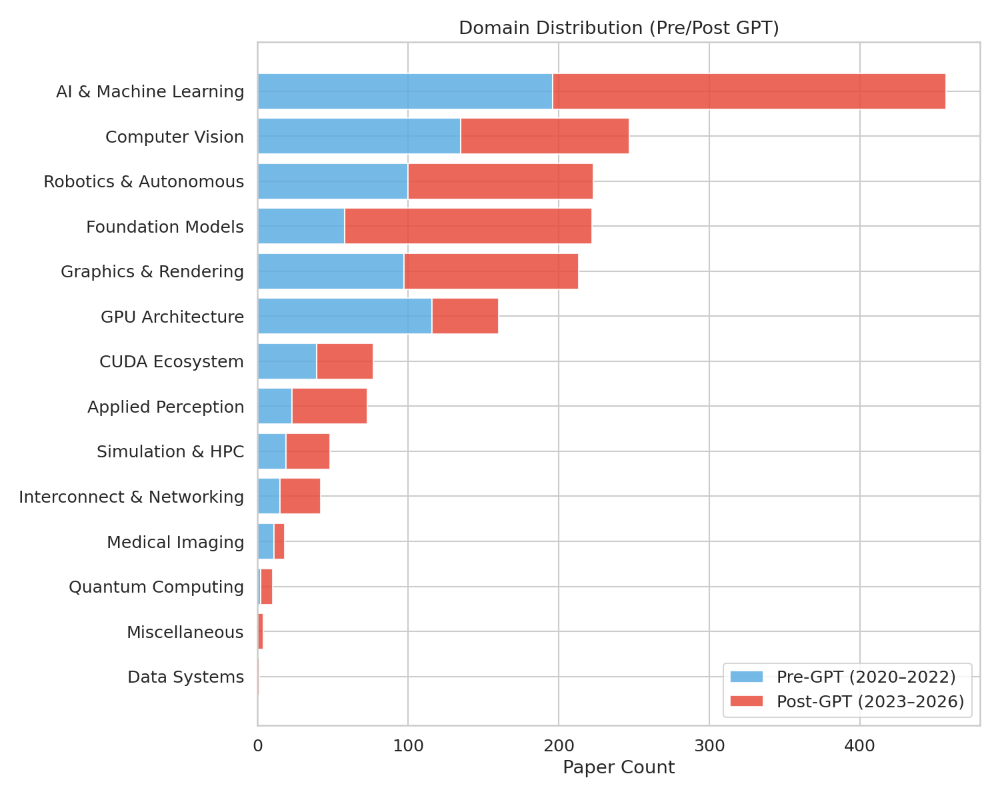
| Domain | Papers | Share |
|---|---|---|
| AI & Machine Learning | 457 | 49.5% |
| Computer Vision | 247 | 26.8% |
| Robotics & Autonomous | 223 | 24.2% |
| Foundation Models | 222 | 24.1% |
| Graphics & Rendering | 213 | 23.1% |
| GPU Architecture | 160 | 17.3% |
| CUDA Ecosystem | 77 | 8.3% |
| Applied Perception | 73 | 7.9% |
| Simulation & HPC | 48 | 5.2% |
| Interconnect & Networking | 42 | 4.6% |
Papers may belong to multiple domains; percentages sum above 100%.
2.2 Temporal Evolution
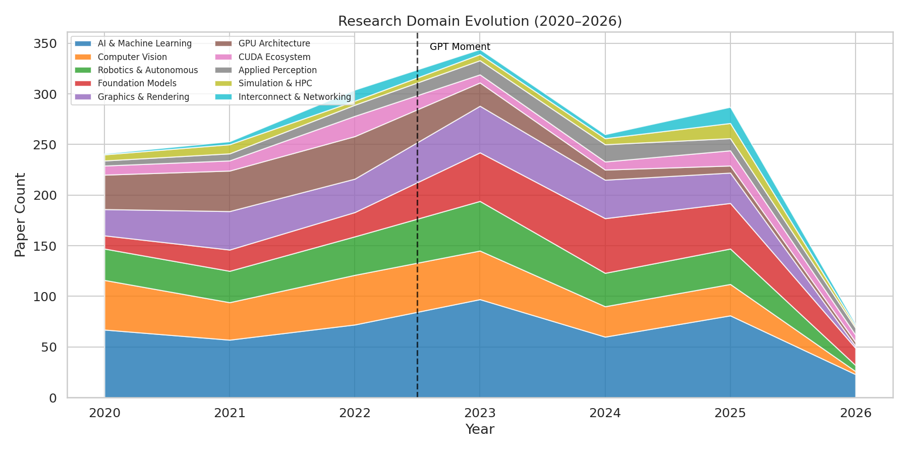
The domain landscape shifted dramatically after late 2022. Foundation Models grew from 58 pre-GPT papers to 164 post-GPT (+183%). GPU Architecture shows the mirror image — declining from 116 to 44. Section 2.5 shows this decline correlates with a shift toward arxiv and away from traditional architecture conferences; whether this reflects reduced investment, publication venue preference, or classification changes is not distinguishable from the data alone.
2.3 GPT Moment Shift by Domain
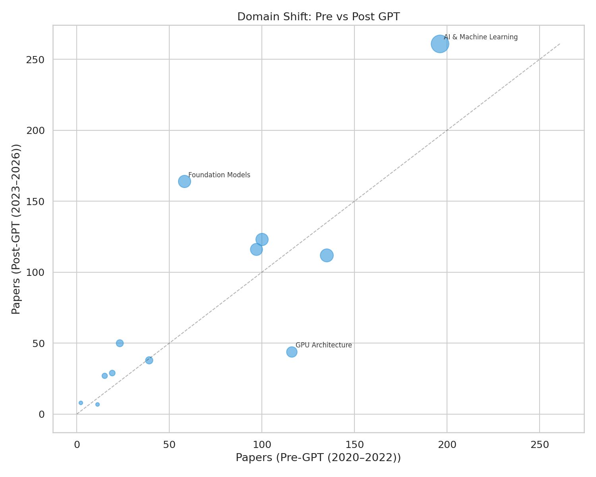
Foundation Models gained 106 papers between eras — the single largest domain-level shift. Applied Perception also showed strong growth (+117%), driven by latency perception and esports research. GPU Architecture was the notable decliner (-62%), alongside a nearly flat CUDA Ecosystem count.
2.4 Key Domain Trajectories
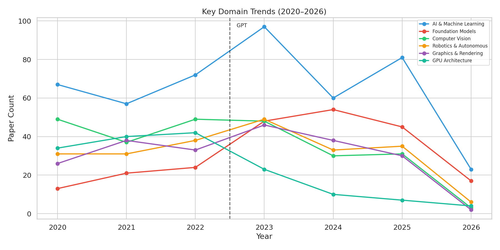
Foundation Models ↗
Hockey-stick curve — flat through 2020-2022, then steep climb to 45-54/year
GPU Architecture ↘
Strong 2020-2022 peak (40-42/year), then sharp decline to 4-23/year
AI & ML, CV, Graphics →
Steady, resilient — forming NVIDIA's research backbone
Robotics →
Consistent across all years without dramatic swings
2.5 Venue × Domain Landscape
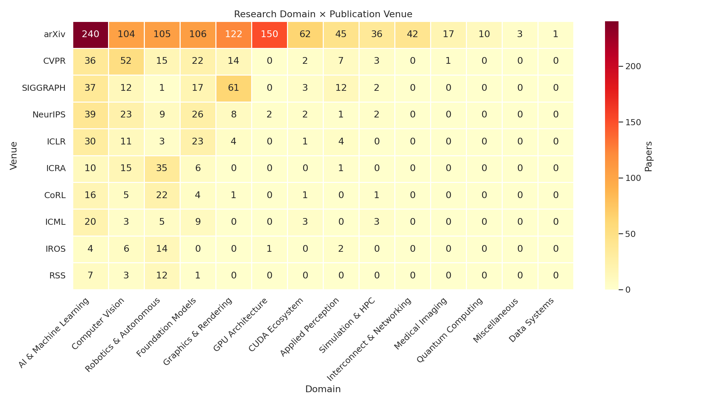
NVIDIA publishes each domain through distinct venue clusters: AI & ML concentrates in NeurIPS and ICML, Computer Vision in CVPR and ICCV, Graphics in SIGGRAPH, and Robotics in CoRL and ICRA. GPU Architecture stands out for its reliance on arxiv — fewer traditional architecture conference publications post-2022.
Academic Collaboration
3.1 Who Leads?
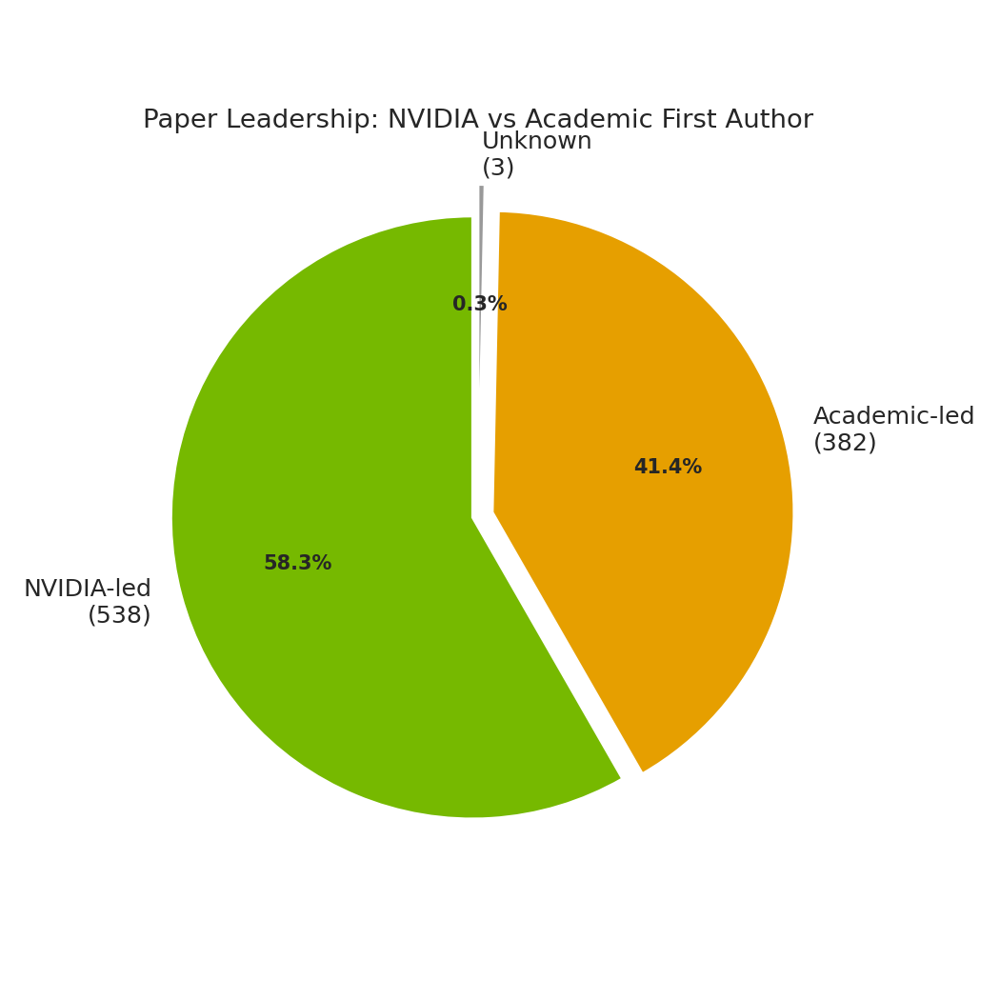
After correcting author affiliations from NVIDIA detail pages, NVIDIA researchers are first author on 58.5% of known-author papers, while academic collaborators lead 41.5%. The model is still NVIDIA-centered, but the corrected data shows a much larger academic lead role than the earlier incomplete-affiliation pass suggested.
3.2 Temporal Stability
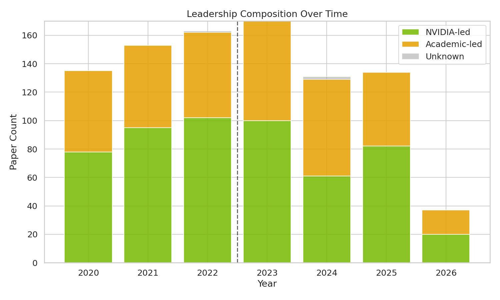
The collaboration model is structural, but the corrected first-author split is less one-sided than before. NVIDIA-led papers were 61.1% of known-author papers in 2020-2022 and 56.0% in 2023-2026; academic-led papers rose from 38.9% to 44.0%.
3.3 Domain Participation
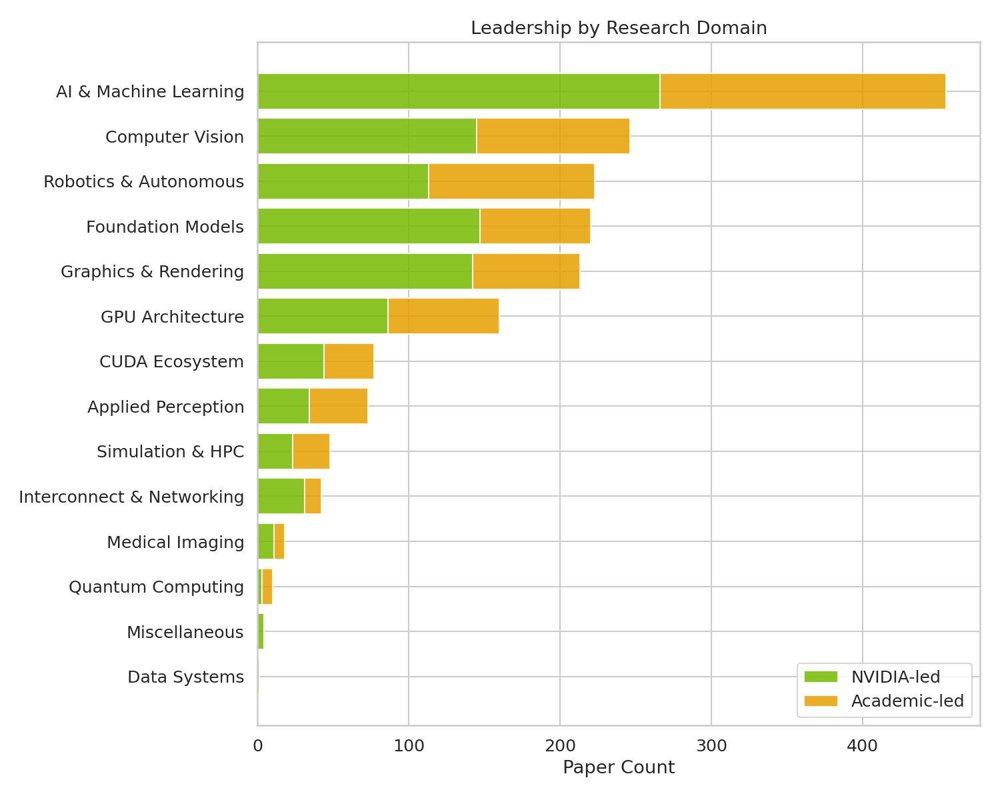
| Domain | Academic-Led % |
|---|---|
| Data Systems | 100.0% (1/1) |
| Quantum Computing | 70.0% (7/10) |
| Applied Perception | 53.4% (39/73) |
| Simulation & HPC | 52.1% (25/48) |
| Robotics & Autonomous | 49.3% (110/223) |
Small domains can dominate the percentage ranking, so the more durable signal is that Applied Perception, Simulation & HPC, and Robotics all sit near parity or academic-majority by first author. Foundation Models remains a major collaborative arena, but its academic-led rate is 32.9% (73/222).
3.4 Top Academic Partners
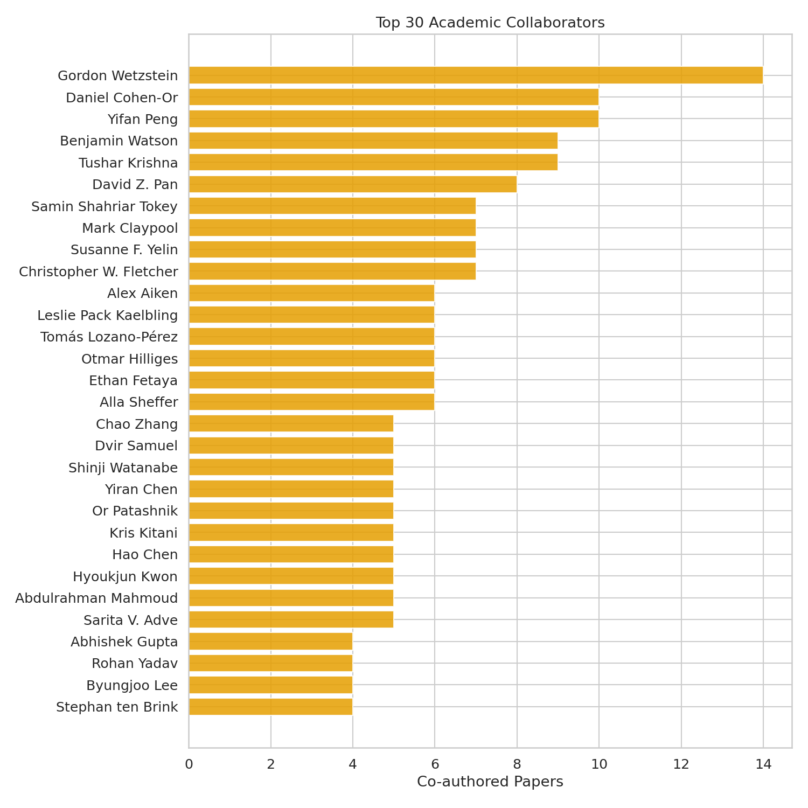
| Scholar | Papers | Primary Domain |
|---|---|---|
| Gordon Wetzstein | 14 | Graphics & Rendering |
| Daniel Cohen-Or | 10 | Graphics & Rendering |
| Yifan Peng | 10 | Medical Imaging |
| Benjamin Watson | 9 | Applied Perception |
| Tushar Krishna | 9 | GPU Architecture |
Product Transfer
4.1 Transfer Overview
After calibration, 56 of 923 papers (6.1%) have verified product transfer through the NVIDIA Technical Blog. While this appears modest, it represents documented, defensible transfer — the tip of the iceberg rather than the full extent of research-to-product flow.
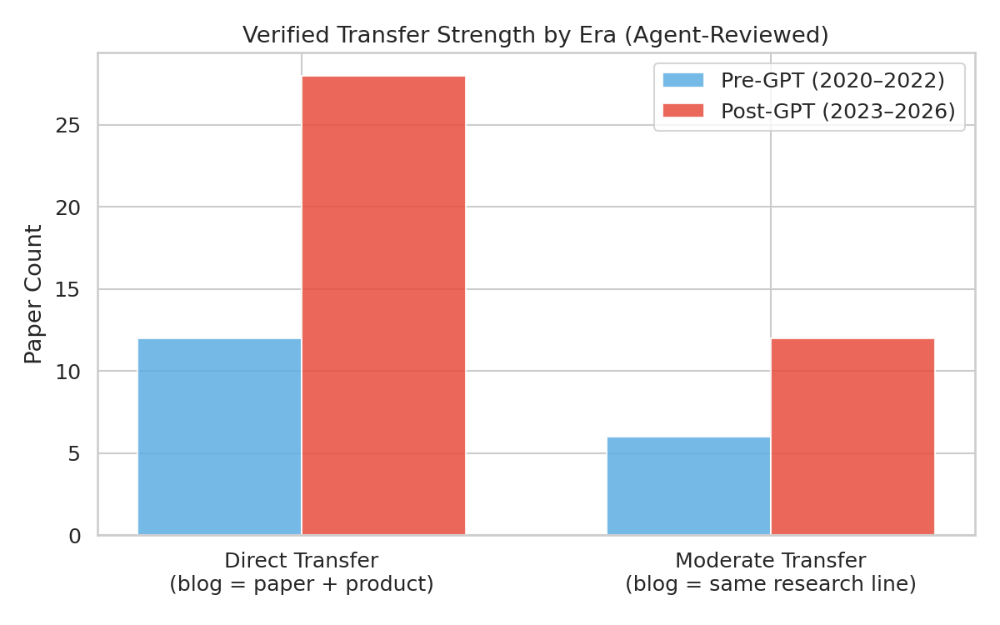
| Metric | Pre-GPT (2020-2022) | Post-GPT (2023-2026) |
|---|---|---|
| Papers with transfer | 16 | 40 |
| Transfer rate | 3.5% | 8.5% |
| Direct transfers | 12 | 28 |
| Moderate transfers | 6 | 12 |
The post-GPT era shows a 2.4× increase in transfer rate — more research is reaching blogs connected to products.
4.2 Transfer by Domain
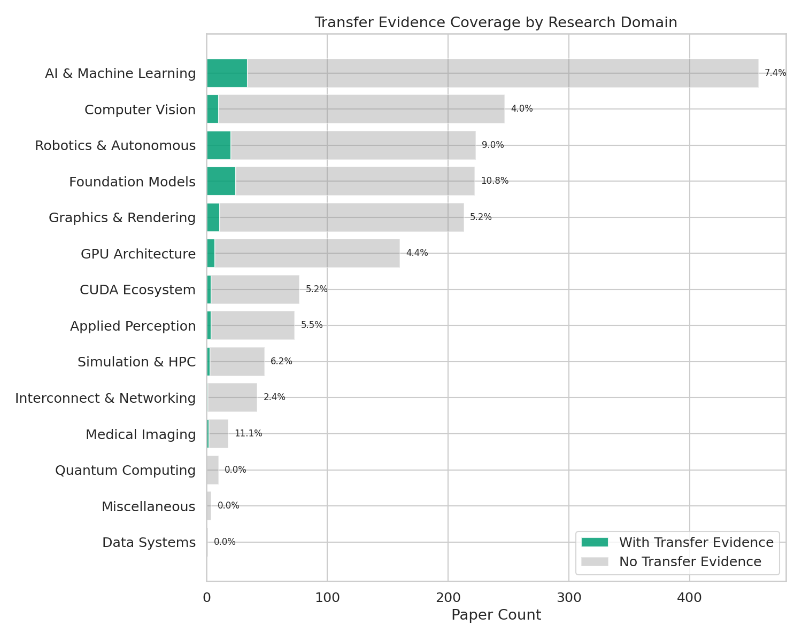
Foundation Models has the highest absolute transfer count among major domains (24 papers) and a 10.8% transfer rate. Medical Imaging shows the highest rate overall (11.1%) but from a small base (2/18 papers). GPU Architecture now has 7 verified blog transfers out of 160 papers (4.4%), still far below model- and robotics-oriented domains.
4.3 Product Landscape

Four ecosystems dominate verified transfer:
| Ecosystem | Papers | Key Products |
|---|---|---|
| Isaac | 16 | Isaac Lab (12), Isaac Sim (6), Isaac Gym, Isaac ROS, GR00T |
| NeMo | 12 | NeMo (11), Parakeet, SteerLM, Megatron-Core, Minitron |
| Dev Tools & CUDA | 23 | CUDA (8), Warp (3), Riva (4), TensorRT (3), Kaolin, Sionna, Reflex, Marco, RTX |
| Omniverse/DRIVE | 4 | Omniverse (3), DRIVE Sim (2) |
Ecosystems overlap: 4 papers appear in both Dev Tools and Isaac, 4 in both Dev Tools and NeMo. Combined unique: 43 of 56 papers. Remaining 13 papers map to Earth-2 (3), Medical AI (4), and standalone transfers.
4.4 Temporal Transfer Trend
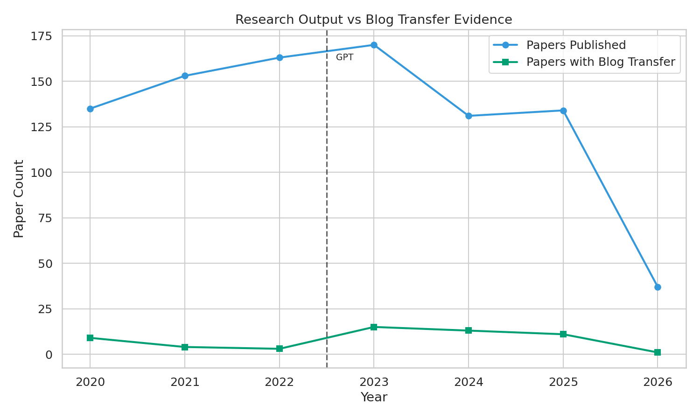
Verified transfers show a clear post-GPT acceleration: 16 papers pre-2022 vs 40 post-2022. The 2023 peak (18 papers) coincides with the initial wave of Foundation Model and LLM-related transfers. 2025 maintained momentum with 16 papers.
4.5 Transfer Scholars
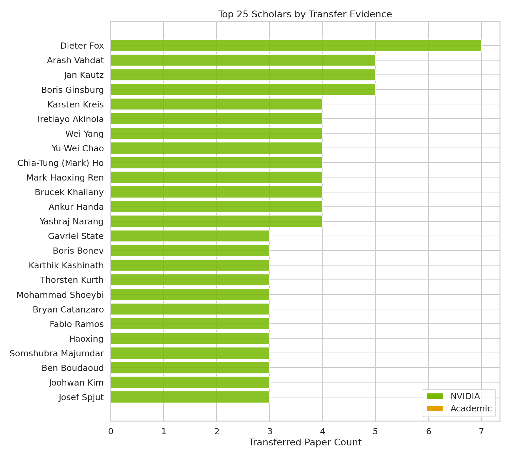
The top verified transfer scholars are a mix of academic collaborators and NVIDIA researchers. Section 5 provides detailed profiles.
Researcher Profiles
The 56 verified paper transfers cluster around a small set of research leaders. Below are profiles of the top 10 transfer contributors — who they are, what they work on, and how their research reached products.
- arxiv-2957 (2020) Human grasp classification for reactive handovers → Isaac, CUDA
- arxiv-2771 (2022) Factory — GPU-native SDF collision detection, 20,000× speedup → Isaac Gym, PhysX
- arxiv-2665 (2023) DeXtreme — domain-randomized dexterous hand training → Isaac Gym, Omniverse Replicator
- rss-0011 (2023) IndustReal — contact-rich assembly sim-to-real → Isaac Lab, Isaac ROS
- rss-0004 (2024) AutoMate — generalist assembly policies → Isaac Sim, Isaac Lab
- corl-0008 (2024) SkillGen — automated demonstration generation → Isaac Lab
- corl-0001 (2025) VT-Refine — visuo-tactile bimanual assembly → Isaac Lab, Warp, Newton
Fox provides overarching research leadership. Each paper appears at a top venue (RSS, CoRL, NeurIPS) before product integration — a deliberate strategy of academic validation before productization.
- ispd-0003/0005 (2023) DREAMPlace/AutoDMP — GPU-accelerated macro placement → DREAMPlace, CUDA
- arxiv-2641 (2023) ChipNeMo — domain-adapted LLMs for chip design → NeMo
- arxiv-2585 (2024) DRC-Coder — automated design rule checking → Marco
- arxiv-2596 (2024) VerilogCoder — autonomous Verilog generation → Marco
- arxiv-2611 (2024) LLM for standard cell layout optimization → Marco
- arxiv-2552 (2025) Marco — configurable multi-agent framework → Marco
All MODERATE transfers — feeding into NVIDIA's internal chip-design toolchain. Chia-Tung (Mark) Ho leads implementation as first author.
- neurips-0045 (2021), iclr-0033/0034 (2022) Score-based generative models, diffusion — cited in "Improving Diffusion Models" blog series → MODERATE
- arxiv-2522 (2026) Proteina-Complexa — protein binder design → Proteina-Complexa, BioNeMo
Works with Karsten Kreis and Jan Kautz as NVIDIA's core generative AI trio. The 2026 Proteina-Complexa paper represents the newest research-to-product type: generative models applied to drug discovery.
- arxiv-2971 (2020) UNAS — neural architecture search → TensorRT, CUDA
- arxiv-3003 (2020) Bi3D stereo depth → A100 GPU
- arxiv-2614 (2024) Mamba-2-Hybrid SSM → NeMo, Megatron-Core (1-month cycle)
- arxiv-2594 (2024) Minitron — LLM pruning/distillation → NeMo, TensorRT-LLM
Portfolio spans CV, NAS, SSM architectures, and LLM compression — reflecting oversight across NVIDIA's learning research portfolio. Mamba-2-Hybrid achieved the fastest turnaround in the dataset: 1 month from arXiv to NeMo integration.
- arxiv-3026 (2020) Cross-language ASR transfer learning → NeMo jump-start training
- arxiv-2674 (2023) Fast Conformer — 2.8× faster training → NeMo Canary
- arxiv-2677 (2023) TDT — token-and-duration transducer → NeMo Parakeet-TDT
- arxiv-2645 (2023) Long-form audio ASR → NeMo Parakeet
- arxiv-2629 (2024) ASR confidence estimation → NeMo
Speech research consistently ships in NeMo within 1-12 months. Collaborators Somshubra Majumdar, Jagadeesh Balam, and Vitaly Lavrukhin form the core NeMo speech team.
First author on Denoising Diffusion GANs (iclr-0034). Works alongside Vahdat and Kautz in NVIDIA's generative modeling group. All four papers cited in NVIDIA's two-part "Improving Diffusion Models" blog series.
First author on IndustReal (rss-0011) and AutoMate (rss-0004). Focuses on contact-rich assembly sim-to-real transfer. All four papers are DIRECT transfers into the Isaac ecosystem. Collaborates closely with Dieter Fox and the GEAR team.
First author on human-to-robot handover research (arxiv-2957) and SynH2R (icra-0004). Bridges CV and robotics — hand-object interaction, bimanual assembly. All papers transfer into Isaac Lab.
First author on Dexplore (corl-0002) and SKT-Hang (icra-0005). Works on semantic keypoints for task understanding and scalable control for dexterous manipulation. All papers transfer into Isaac Lab.
First author on all 4 transferred papers. Lead architect of NVIDIA's Marco multi-agent framework for chip design. Papers form a coherent sequence: DRC checking → Verilog generation → cell layout → unified Marco framework. All MODERATE — research feeding internal design automation.
Cross-Cutting Patterns
Collaboration Clusters
Three tight research groups dominate transfer: robotics sim-to-real (Fox, Akinola, Yang, Chao), generative AI (Vahdat, Kreis, Kautz), and chip design (Ren, Ho). Boris Ginsburg's speech group is the most self-contained.
Academic-Industry Duality
Dual appointments still matter, but the corrected affiliation pass classifies Fox, Ren, and Ginsburg as NVIDIA-affiliated when NVIDIA appears in the source data.
First-Author Dynamics
Mark Ho is first author on all 4 of his papers — the implementation leader. Fox, Kautz, and Ginsburg serve as senior/last authors — the research directors. Vahdat, Kreis, Yang, and Chao share first-author credit across collaborative papers.
Product Transfer Stories
6.1 Isaac Ecosystem 16 papers
The Isaac ecosystem is NVIDIA's robot AI development platform, organized in layers from simulation through training to deployment. It is the largest recipient of verified research transfer — 16 papers feed into 8 distinct Isaac products.
Architecture Overview
| Layer | Product | Role | Research Input |
|---|---|---|---|
| Simulation | Isaac Sim | High-fidelity digital twin | Factory's SDF collision detection → PhysX (arxiv-2771) |
| Training | Isaac Lab | GPU-accelerated RL/IL | DeXtreme domain randomization (arxiv-2665), IndustReal impedance control (rss-0011) |
| Training (legacy) | Isaac Gym | Standalone GPU RL | Factory parallel environments, DeXtreme cube rotation |
| Deployment | Isaac ROS | ROS 2 perception + control | FoundationPose uncertainty quantification (icra-0029) |
| Foundation | Isaac GR00T | Foundation models for humanoids | GR00T N1 dual-system architecture (arxiv-2567), MaskedMimic (siggraph-0009) |
Transfer Timeline — Five Phases
6.2 Developer Tools 23 papers
NVIDIA's developer-tools ecosystem spans "horizontal" platforms (CUDA, Warp, TensorRT — accelerating any workload) and "vertical" tools (Sionna for wireless, Riva for voice, Reflex for gaming, Marco for chip design).
CUDA & GPU: The Horizontal Substrate
A100 GPU enabling CV research (arxiv-3003): Two CVPR 2020 papers exploited new Ampere features — third-gen Tensor Cores with TF32 delivering up to 10× throughput over Volta; 2:4 structured sparsity doubling effective math throughput for inference. The pattern: new GPU hardware → larger models, faster iteration. UNAS via TensorRT + CUDA (arxiv-2971): Neural architecture search deployed through TensorRT with AMP on V100 GPUs, achieving 16× inference speedup.
Research-to-Library: Papers Become SDK Features
Kaolin Library — arxiv-2604 (2024) delivered Simplicits handling meshes, point clouds, Gaussian Splats, and NeRFs. Became kaolin.physics API. Warp — GPU computing in Python, used across graphics, robotics, and physics. Sionna → TensorRT → Aerial pipeline — neural receiver research prototyped in Sionna, hardened through TensorRT for real-time inference (<1ms on A100), graduated to Aerial (commercial 5G RAN).
Research-to-Product: Papers Become Product Capabilities
Riva — Parakeet ASR, Canary multilingual, and Parakeet-TDT models → Riva production serving. Reflex — 15,000+ players studied across latency conditions; top-decile players hit 2× more targets at 25ms vs 85ms. Justified Reflex SDK design. Marco & DREAMPlace — LLM multi-agent framework for chip design (VerilogCoder at 94.2% benchmark success, MCMM at ~60× human speedup).
6.3 NeMo Ecosystem 12 papers
NVIDIA NeMo is a three-tier platform: NeMo Framework (LLM training), Megatron-Core (distributed training), and NeMo Curator (data pipelines). Twelve research papers have transferred to this ecosystem since 2020.
ASR/Speech: The Longest Pipeline
The speech lineage begins with arxiv-3026 (May 2020) — cross-language transfer learning for CTC-based ASR, shipped same month as NeMo "jump-start training." Fast-Conformer (arxiv-2674, May 2023) achieved 2.8× faster training; eleven months later powered the Canary model. Token-and-Duration Transducer (arxiv-2677, April 2023) became Parakeet-TDT — 64% faster inference, first sub-7.0 WER on HuggingFace. Long-form ASR study (arxiv-2645) validated Parakeet on earnings calls and lecture-length audio.
LLM Optimization: Alignment, Compression, Architectures
SteerLM (arxiv-2644, Oct 2023) replaced complex RLHF with attribute-conditioned SFT — shipped in NeMo same month. Minitron (arxiv-2594, Aug 2024) systematized LLM compression — produced Minitron-8B, Mistral-NeMo-Minitron-8B (outperforming Llama-3.1-8B on 9 benchmarks). Mamba-2-Hybrid (arxiv-2614, Jun 2024) — Mamba-2 layers 18× faster at sequence length 256K; NeMo + Megatron-Core added SSM support one month later — the fastest paper-to-product cycle in the dataset.
| Year | Key Papers | Product Integration | Theme |
|---|---|---|---|
| 2020 | arxiv-3026, arxiv-2962, arxiv-2965 | NeMo ASR, BioMegatron, LAMP/MONAI | Foundation: ASR transfer learning, biomedical NLP |
| 2023 | arxiv-2674, arxiv-2677, arxiv-2644, arxiv-2645 | Fast-Conformer, TDT, SteerLM, Parakeet | Speech architecture redesign, LLM alignment |
| 2024 | arxiv-2614, arxiv-2594, arxiv-2629 | Mamba-2-Hybrid (1 month), Minitron, ASR confidence | LLM architecture innovation, model compression |
| 2025 | arxiv-2579 | NeMo Curator (Cosmos data pipeline) | Data curation at scale |
6.4 CUDA + GPU: The Silent Substrate 8 papers
CUDA and GPU hardware are the foundation beneath every other NVIDIA product — yet they generate fewer blog-visible transfers per paper than model and robotics domains. With 160 papers on GPU Architecture and 7 verified blog transfers, plus 8 papers linking directly to CUDA/A100, this ecosystem represents the quieter side of research transfer.
Why GPU Architecture Has Few Blog Transfers
GPU architecture research (160 papers) publishes at architecture venues or arxiv, then ships in products like Blackwell, Hopper, and Ampere with less research-blog fanfare. The low blog evidence rate is not evidence of absence. It reflects a different communication strategy: hardware ships through product launches and technical documentation, not primarily through research blogs. CUDA appears as a secondary product across every ecosystem — as the execution substrate for Isaac and NeMo workloads, as the acceleration core for DREAMPlace.
GPT Moment Shift
Comparing pre-GPT (2020-2022) to post-GPT (2023-2026):
| Dimension | Pre-GPT | Post-GPT | Δ |
|---|---|---|---|
| Scale | 451 papers | 472 papers | Near-flat |
| Composition | Hardware-focused | Model-focused | Foundation Models +183% |
| Collaboration | 61.1% NVIDIA-led | 56.0% NVIDIA-led | More academic-led |
| Transfer Rate | 3.5% | 8.5% | +2.4× |
| Direct Transfers | 12 | 28 | +16 |
| New Domains | — | Miscellaneous (4), Data Systems (1) | Nascent diversification |
Synthesis
The GPT moment did not cause NVIDIA to produce dramatically more research — it caused NVIDIA to produce different research. The 451-to-472 paper count is close to flat, but beneath that surface stability lies a radical reallocation: Foundation Models absorbed 106 net-new papers while GPU Architecture shed 72. The post-GPT transfer rate increase (3.5% → 8.5%) is partly compositional: more research now falls into blog-friendly domains. Corrected affiliations also change the collaboration story: NVIDIA still leads a majority, but academic first authors account for 41.5% overall and rise post-GPT.
Key Takeaways
Appendix: Plan Compliance Check
| # | Planned Analysis | Satisfied? | Evidence |
|---|---|---|---|
| 1 | Domain static distribution | ✓ Yes | Section 2.1 + figure |
| 2 | Domain temporal evolution with GPT split | ✓ Yes | Section 2.2 + figure |
| 3 | CV/GPU/LLM post-2022 surge check | ✓ Yes | Sections 2.3, 2.4 |
| 4 | Solo NVIDIA vs academic collaboration ratio | ✓ Yes | Section 3.1 |
| 5 | First-author academic-led breakdown | ✓ Yes | Section 3.1 |
| 6 | Domain academic participation ranking | ✓ Yes | Section 3.3 |
| 7 | Top scholar collaborators | ✓ Yes | Section 3.4 |
| 8 | Transfer evidence type distribution | ✓ Yes | Section 4.1 (calibrated: DIRECT/MODERATE) |
| 9 | Papers with product footprints count | ✓ Yes | Section 4.1: 56/923 (6.1%) |
| 10 | Product-level mapping (which products) | ✓ Yes | Section 4.3 |
| 11 | Domain-to-product landing analysis | ✓ Yes | Section 4.2 (domain transfer rates) |
| 12 | Scholar contribution to product transfer | ✓ Yes | Sections 4.5, 5 |
All 12 planned analyses satisfied with calibrated data.